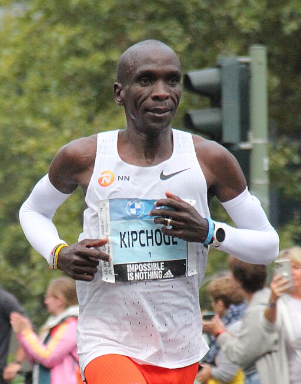
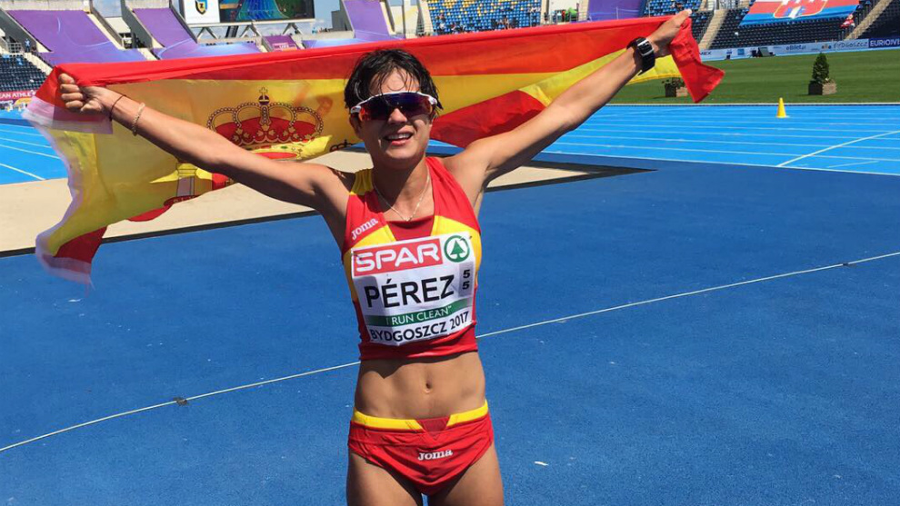

Maratón de Berlín 2025
El keniano Kipchoge logra un nuevo récord personal en una emocionante competencia con más de 40,000 corredores.
Campeonato Mundial de Atletismo
La atleta española María Pérez obtiene el oro en marcha atlética, consolidándose como una de las mejores del mundo.